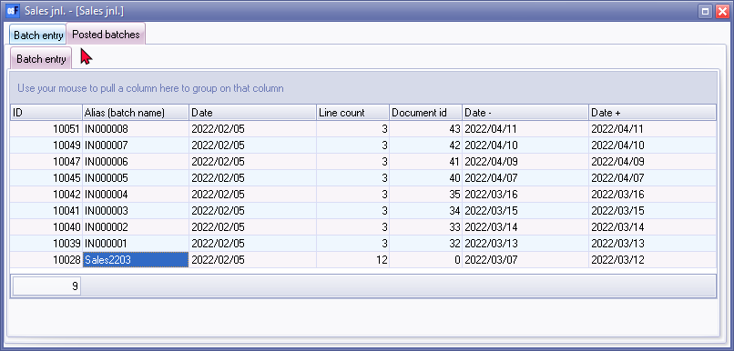
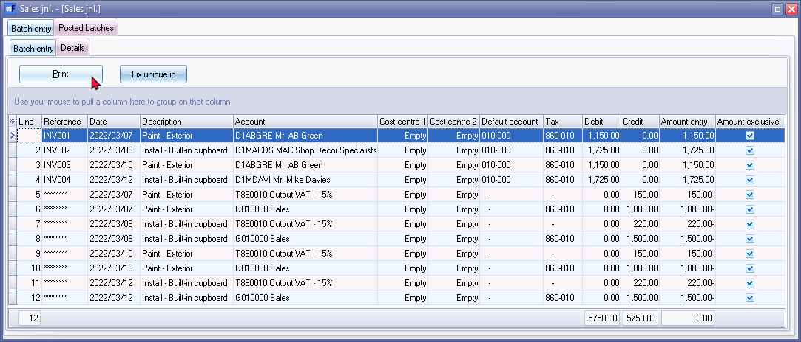
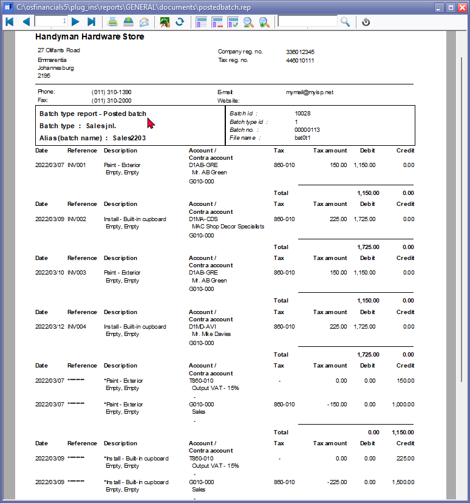
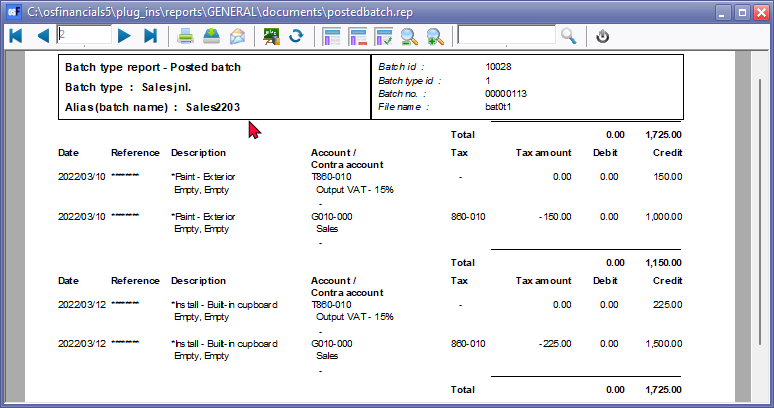

Batch entry screen - Posted batches tab
All transactions are entered into batches and documents and when these batches and documents are updated or posted to the Ledger transactions are generated. All transactions are stored in osFinancials for up to two years. The format in which transactions are stored in osFinancials is the same as the way they are entered in the batch entry screens. The quality of your reports depends on the care you have taken to enter your data or transactions correctly and to optimise the various fields in the batch entry screens.
You may enter thousands of transactions of a different nature. osFinancials have provided you with a powerful facility to retrieve reports on each of these Batch types. You may print batch type reports for specific periods, or by Batch numbers, or batch names. You are then able to view and analyse these transactions for each of the specific Batch types (Journal types), in which they were entered into the system.
- Sales - Sales journal
- Purchases - Purchase journal
- Payments - Payments journal
- Receipts - Receipts journal
- Petty cash - Petty cash payments journal
- General - Adjustments, correction of errors, Depreciation, Payroll transactions, etc. - General journal
You may also create additional batch types to enter and update or post specific transactions to the Ledger. These additional Batch types would then be reflected in the Batch type report.
|
|
If you generate documents in Documents (Default ribbon), the documents will be updated and posted to the Ledger and be included in the Batch type reports for the following Journals:
|

In addition to the Batch type Reports Options on the Reports → Batch entry menu, you may print a batch type report for a specific posted batch.
To print a batch type report for a specific batch:
- On the Default ribbon, select Batch entry (F2).
|
|
You may also print the same batch type reports in Tools → Global processes → Reverse posted batch/document (Setup ribbon). |

- Select the specific Batch type.
- Click on the Posted batches tab. The Batch entry tab listing all batches and documents posted to the ledger is displayed:

- The context menu (right-click) are as follows:
- Details - Select to open the Details tab for a selected batch.
- Report - This will launch the old standard batch type report for a specific batch.
- The columns of the Batch entry tab is as follows:
- ID - Batch ID as automatically generated for each batch created.
- Alias (batch name) - This is the name entered in the "Change alias" field before you post the batch.
|
|
In the case of documents, the document number will be listed. Document numbers are generated automatically generated. |
- Date - The date and time on which the batch was posted to the ledger.
- Line count - The number of transactions (including balancing transactions) in batches. In the case of documents,the line count is the debtor / creditor account, the contra account and the tax (VAT/GST/Sales tax) account as set in the Ledger tab of the selected stock item.
- Document id - This is the record id automatically generated when a new document is created.
|
|
In the case of Batches the "Document id" will always be "0". |
- Min date - The date of the first transaction entered in the batch.
- Max date - The date of the last transaction entered in the batch.
- Select a specific batch and double-click it. The Details tab is displayed:
|
|
The columns are similar to the Batch entry screen. Note the following columns:
|
- Click on the Print button. The Batch type transactions will be printed. An example is as follows:
Page 1 -

Page 2 -

|
|
Some additional information for consultants and advanced users (using the SQL Browser Plugin or FlameRobin) are displayed in the right-hand block. The details are as follows:
|
- After printing the batch - click on the Close button.